Riad Atelier
Dalle mani dei maestri di Marrakech alle case e alle tavole d'Italia: calce, spezie, ospitalità.
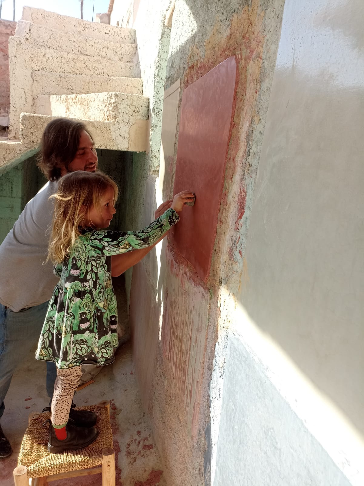
Due Arti, Una Sola Radice
Nel riad marocchino, l'arte di rivestire un muro e l'arte di preparare un tajine nascono dallo stesso gesto: accogliere. Riad Atelier porta in Italia questa doppia eredità - la calce lucida del tadelakt e i sapori delle cucine di Marrakech - attraverso artigiani e maestri di cucina formati secondo la tradizione.
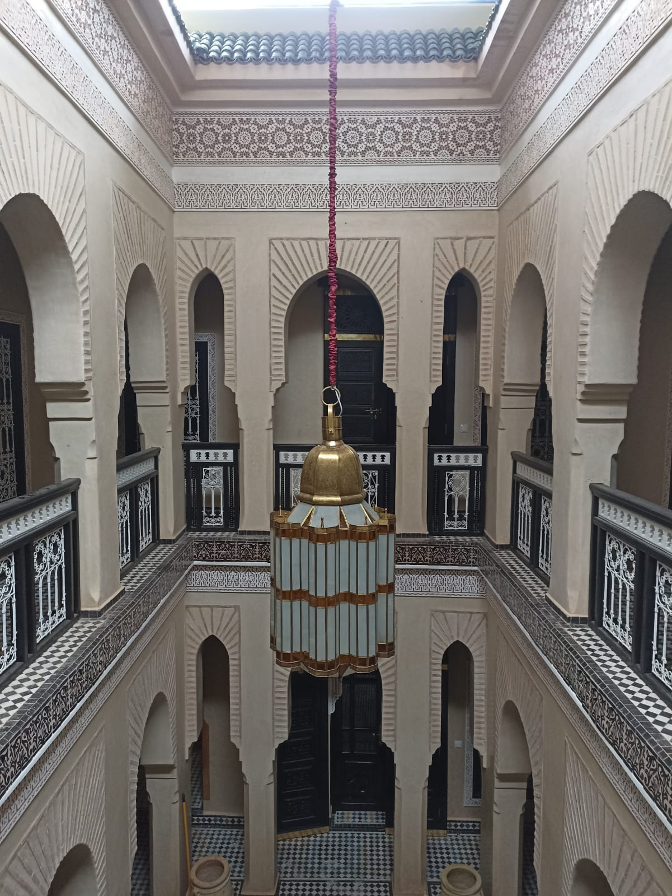
La Calce che Respira
Tecnica millenaria nata negli hammam di Marrakech, il tadelakt trasforma bagni, docce, cucine e pareti in superfici lucide, calde e naturalmente impermeabili. I nostri artigiani, formati secondo il metodo tradizionale, lavorano in tutta Italia per hotel, architetti e privati.
Bagni & Hammam Privati
Superfici lucide, resistenti all'umidità, su misura per il tuo bagno.
Cucine & Superfici ad Acqua
Piani e rivestimenti a contatto con acqua, naturali e senza fughe.
Pareti & Nicchie Decorative
Superfici materiche per interni residenziali e contract.
Restauro & Manutenzione
Ripristino di superfici esistenti secondo la tecnica originale.
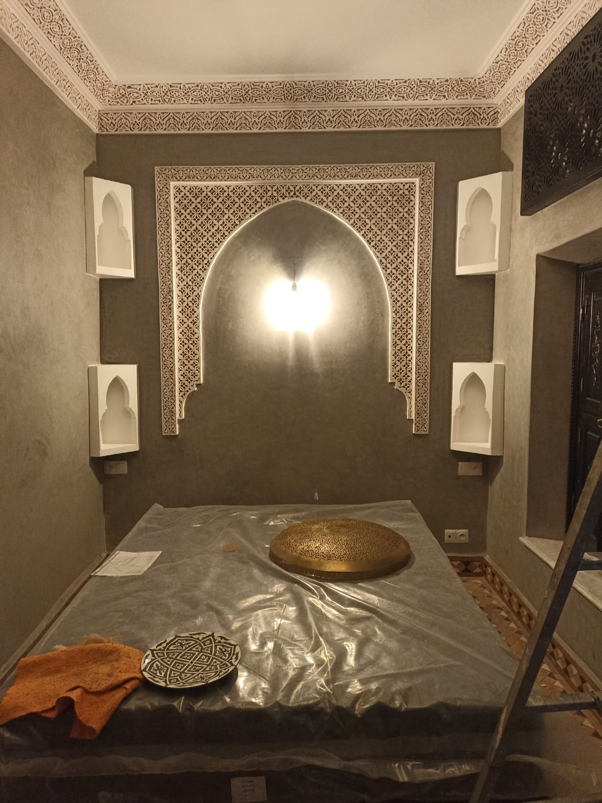
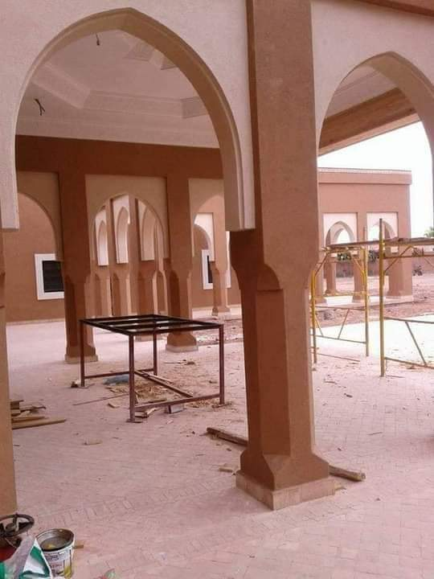
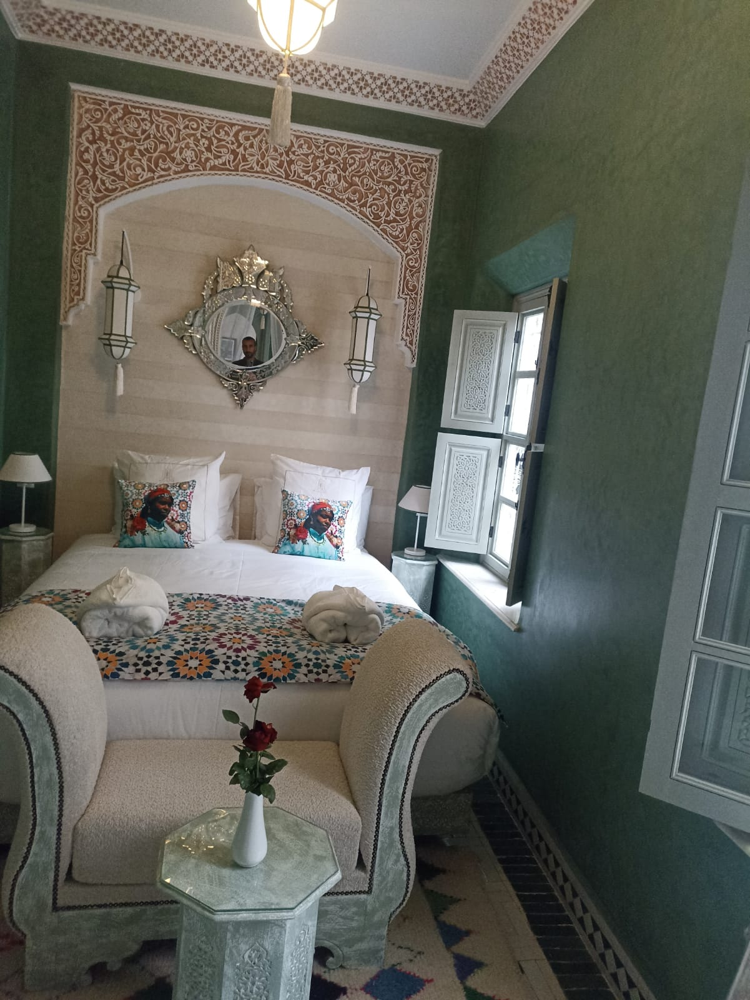
Foto e Video dei Nostri Cantieri
Uno sguardo reale sul lavoro dei nostri artigiani: superfici in lavorazione, risultati finiti e il feedback di chi ha scelto Riad Atelier.
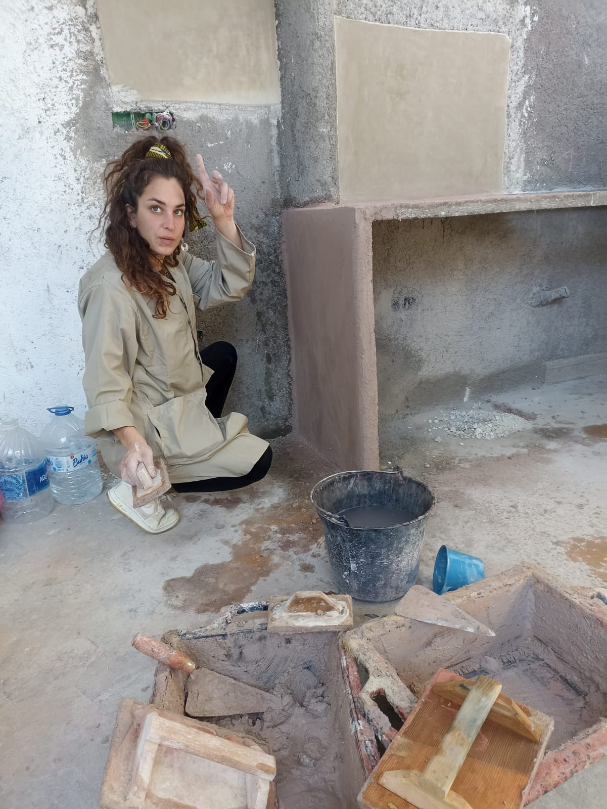
Foto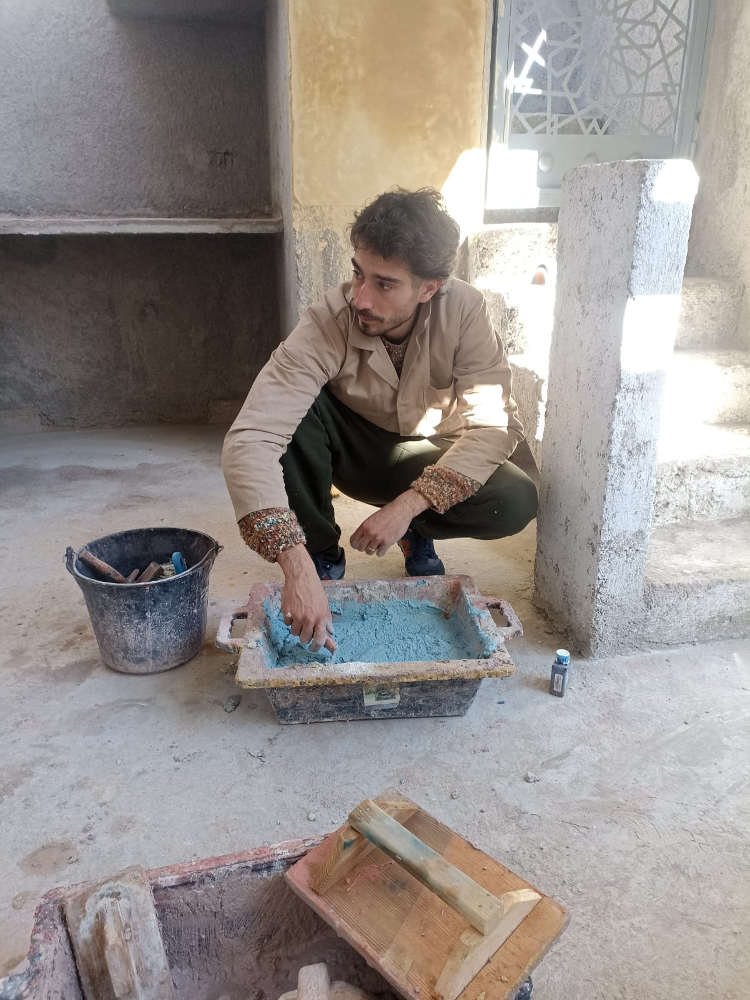
Foto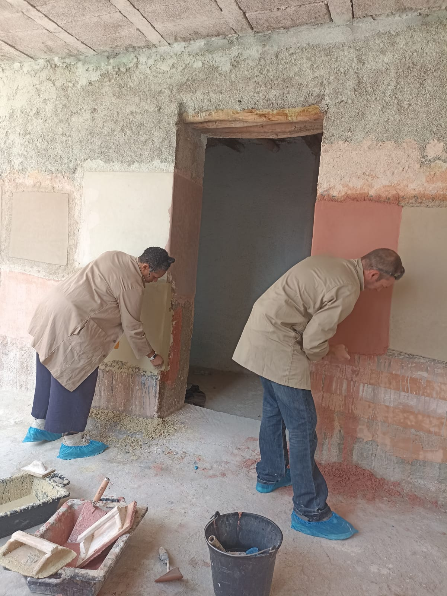
Foto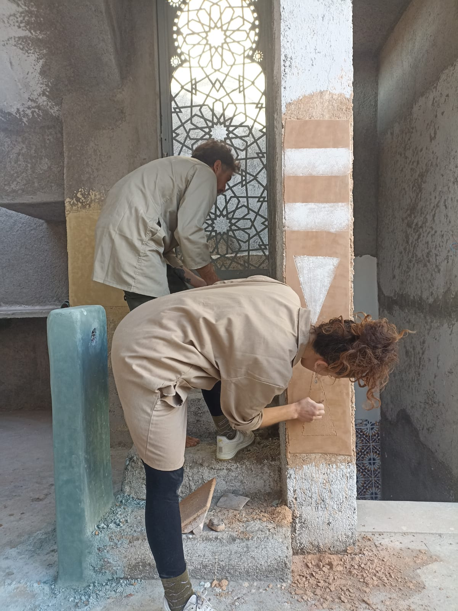
Foto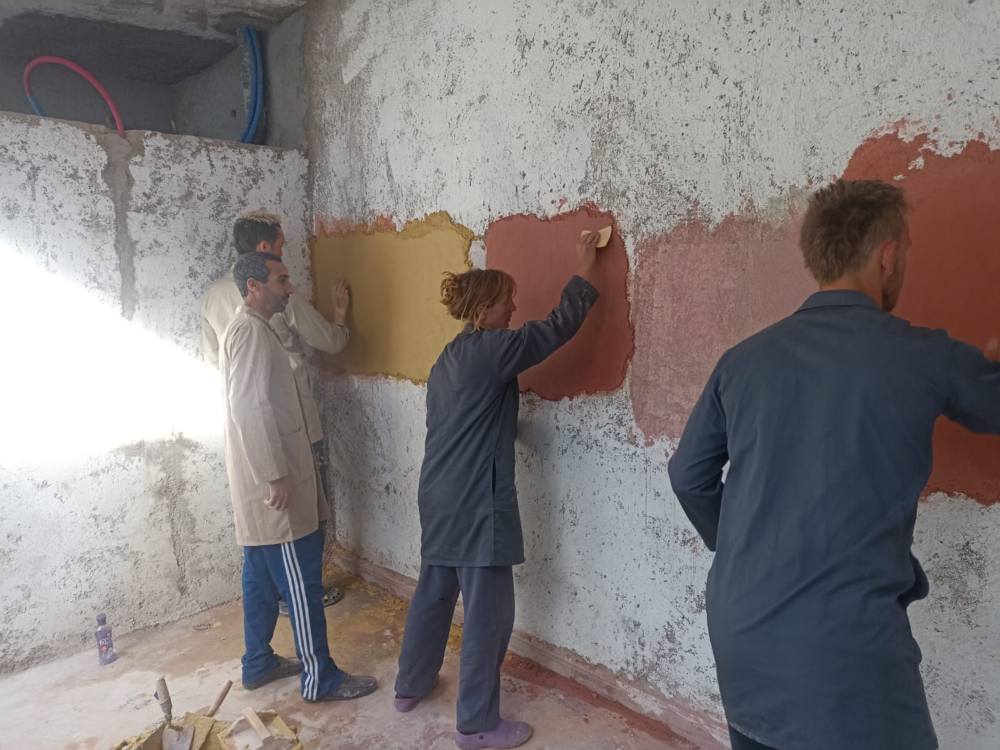
FotoAltre foto e video dei cantieri sono pubblicati regolarmente sul nostro Instagram.
Segui su InstagramI Nostri Maestri
Selezioniamo artigiani marocchini con anni di esperienza diretta a Marrakech, li accompagniamo in Italia e ne curiamo la formazione continua, per garantire un tadelakt fedele alla tradizione, cantiere dopo cantiere.
Abdelfettah Soukdal
Forma i nostri artigiani e maestri di cucina, unendo le due tradizioni.
Adil Dermous
Coordina i cantieri e i team di artigiani tadelakt in tutta Italia.
Abdelkarim Qaceme
Specialista nella lavorazione della calce su superfici curve e bagni.
Aziz En-naciri
Formato a Marrakech, applica il tadelakt su cantieri residenziali e contract.

A Tavola con Marrakech
Piccoli gruppi, ingredienti autentici, gesti tramandati: impara a preparare tajine, couscous, pastilla e il rituale del tè alla menta, guidato da chi la cucina marocchina la vive ogni giorno.
Tajine & Couscous
Le basi della cucina marocchina quotidiana, dalla spezia al piatto finito.
Prenota →Pastilla & Dolci
Sfoglie sottili, mandorle e miele: i segreti della pasticceria marocchina.
Prenota →Corso Privato
Per gruppi, aziende o eventi: un'esperienza marocchina su richiesta.
Prenota →Foto e Video dei Nostri Corsi
I momenti vissuti a tavola e ai fornelli: preparazioni, gesti tramandati e le impressioni di chi ha partecipato ai nostri corsi.
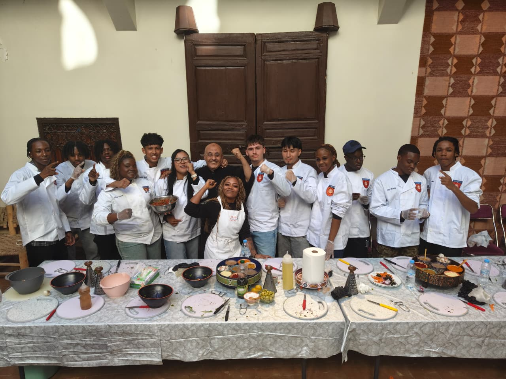
FotoAltre foto e video dei corsi sono pubblicati regolarmente sul nostro Instagram.
Segui su InstagramMateriali dal Marocco
Calce di Marrakech, frattazzi in legno di cedro, sapone nero, spezie e tè alla menta: tutto ciò che serve per portare il Marocco a casa tua, selezionato e importato direttamente.

Calce di Marrakech, 20kg
€85,00
Frattazzo in Legno di Cedro
€5,00 – €20,00
Sapone Nero Marocchino
€6,00 – €49,00
Set Spezie & Tè alla Menta
€18,00Chi Ha Vissuto Riad Atelier
"Un lavoro impeccabile, il bagno sembra uscito da un riad di Marrakech."
Cliente privato - Milano
"Il corso di cucina è stato un'esperienza autentica, non una semplice lezione."
Cliente privato - Torino
"Professionalità marocchina e affidabilità italiana: la combinazione perfetta."
Studio di Architettura - Como